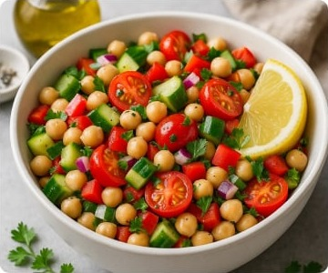
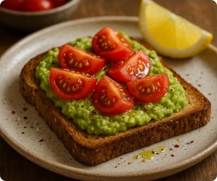
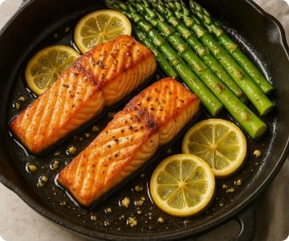
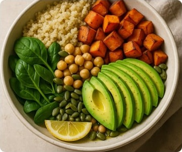
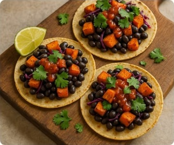
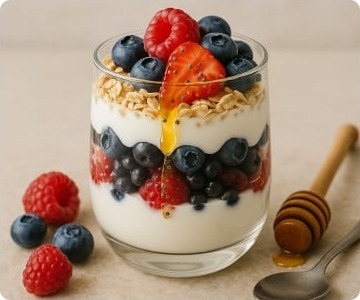
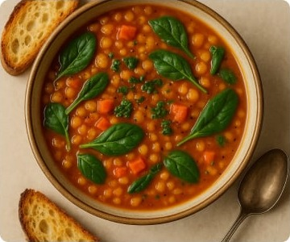

Mediterranean Chickpea Salad
A refreshing, protein-packed salad tossed in a lemon-olive oil dressing.
Discover eight quick, whole-food dishes that fit real-life schedules and taste
amazing. Use the search bar to find a recipe by name or ingredient, or simply scroll
the list and let something delicious catch your eye.

A refreshing, protein-packed salad tossed in a lemon-olive oil dressing.

Creamy avocado spread over toasted wholegrain bread, topped with juicy tomatoes.

A 15-minute weeknight dinner of flaky salmon and tender asparagus.

A balanced bowl of fluffy quinoa, roasted veggies and healthy fats.

Smoky roasted sweet potatoes and black beans tucked into warm tortillas.

Layers of creamy Greek yogurt, fresh berries and crunchy oats for a high-protein snack.

A hearty 30-minute soup rich in plant protein and iron.
Flour-free pancakes sweetened naturally with ripe bananas.
No recipes match your search. Try another ingredient or time.